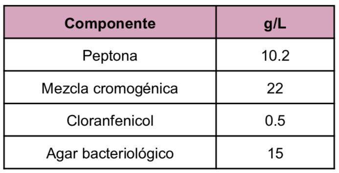
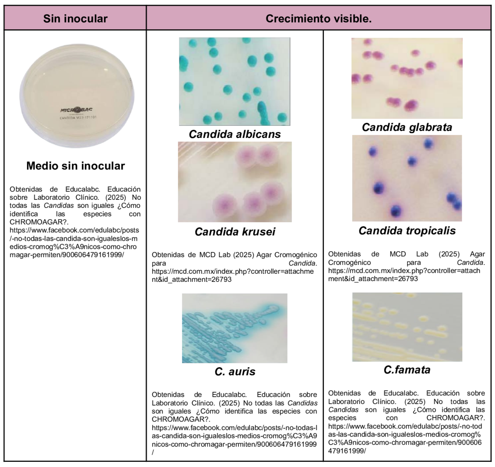

Es un medio cromogénico diferencial y selectivo para el aislamiento e identificación de
Candida
En la composición se encuentra una mezcla cromogénica de sustratos artificiales que al degradarse por enzimas específicas liberan diversos compuestos con color lo cual permite diferenciar las especies de
Candida
y el cloranfenicol dentro de la composición inhibe las bacterias contaminantes.
Composición

pH a 25°C 6.1±0.2
Resultados Posibles
Las diversas especies de Candida resultan en colores distintos dada los diversos sustratos cromogénicos dependiendo de la marca del Agar Cromogénico.
- Candida albicans: Colonias con tonalidad verde
- Candida albicans: Colonias con tonalidad verde
- Candida krusei: Colonias rosas y rizadas
- Candida glabrata: Colonias lilas.

Referencias
MCD Lab (2025) Agar Cromogénico para Candida. https://mcd.com.mx/index.php?controller=attachment&id_attachment=26793